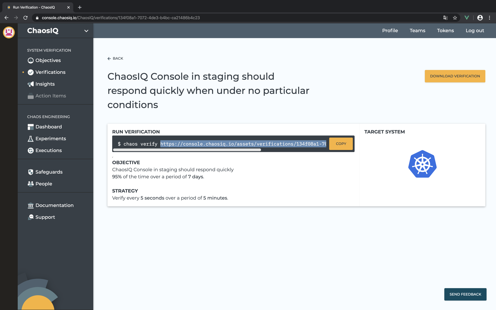

Create a Chaos Experiment on Kubernetes
Now that you setup successfully your operator and your ChaosIQ secrets, we'll show you on how to create the Chaos Experiment definition to pass to the operator.
To run Chaos Toolkit with ChaosIQ as a kubernetes pod, we provide a default docker image, but you can create your own, with additional extensions if needed, as described in the documentation. The default image will be downloaded from the docker hub.
First, get the asset URL for either the verification or the experiment from
the ChaosIQ console. Copy the URL from the chaos command, or right-click
on the downlad button to copy the target link.

Your verification or experiment URL shall be like the following pattern:
https://console.chaosiq.io/assets/[verifications|experiments]/<uuid>.json
Then, you shall use the following template, with your own asset URL, to create
a Chaos Toolkit Experiment definition. You must modify the command arguments to
verify or run an experiment with your own asset URL, update the pod image
if you created a custom ChaosIQ docker image, update the
settings secret name if desired. You can also customize your manifest following
the official documentation.
---
apiVersion: chaostoolkit.org/v1
kind: ChaosToolkitExperiment
metadata:
name: my-chaos-exp
namespace: chaostoolkit-crd
spec:
namespace: chaostoolkit-run
pod:
image: chaosiq/chaostoolkit
chaosArgs:
- verify
- https://console.chaosiq.io/assets/verifications/134f08a1-7072-4de3-b4bc-ca21486b4c23.json
settings:
enabled: true
secretName: chaostoolkit-settings
experiment:
asFile: false
Save that manifest into a yaml file e.g. verification.yaml.
Finally, apply that manifest onto your Kubernetes cluster:
$ kubectl apply -f ./verification.yaml
You'll be able to handle your experiments in your cluster from the command line, as described in the official documentation.
The executions and results of those experiements will be pushed to your ChaosIQ console and visible in the Insights and Executions pages.